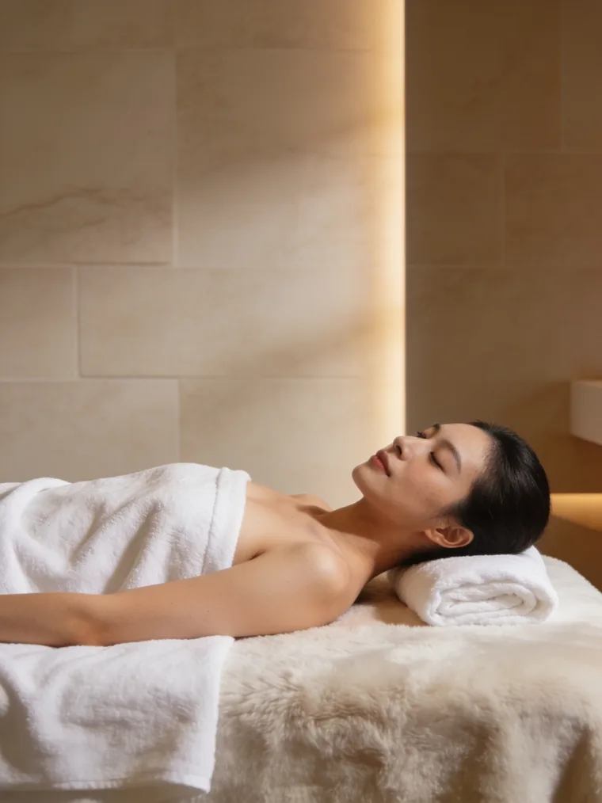

Recomandat
Împachetare la cald
190lei
de la · per ședință
Programează →

Corp · Detox & drenaj
Retenție de apă, picioare grele, senzație de balonare sau pur și simplu nevoia de un reset? Stimulăm drenajul limfatic și detoxifierea cu împachetare la cald, presoterapie și termocuvertă. Te simți mai ușoară și mai energică.
De ce contează drenajul

Sistemul limfatic e „canalizarea" corpului: elimină toxinele și surplusul de lichide. Când încetinește, din sedentarism, stres sau alimentație - apar retenția de apă, balonarea, picioarele grele și o stare de oboseală.
Tratamentele de detox stimulează circulația și drenajul limfatic: împachetarea la cald activează eliminarea, presoterapia masează limfatic prin compresie, iar termocuvertura susține detoxifierea, pentru o senzație reală de ușurare.
Cum funcționează presoterapia
Tratamente recomandate
Adesea combinăm aceste tratamente într-o cură de detoxifiere. Planul exact îl stabilim la consultația gratuită. Mai jos, opțiunile recomandate.
Cum decurge
Detoxul funcționează cel mai bine în cură: un ritm constant care reactivează drenajul.
Discutăm obiectivul + plan
Stabilim combinația de detox potrivită (împachetare / presoterapie / termocuvertă). Gratuit.
Senzație de ușurare imediată
Cură de detoxifiere
Retenție redusă, mai multă energie
te simți mai ușoară*O ședință periodică de reset
Hidratarea, mișcarea și o alimentație echilibrată mențin efectul.
*În majoritatea cazurilor. Rezultatele variază în funcție de stilul de viață, alimentație și nivelul de retenție. Tratamentele susțin, dar nu înlocuiesc, un stil de viață sănătos.
Întrebări frecvente
Ce spun clientele
5,0 / 5
★★★★★ · 300+ recenzii Google
Primul pas e gratuit
Preferi să scrii? WhatsApp